Membuat aplikasi web E-Commerce / Toko Online berbasis framework CodeIgniter 3 (PHP) dan database MySQL yang menerapkan pola arsitektur MVC (Model-View-Controller). Sistem harus mencakup otentikasi multi-role (Administrator & Customer), katalog produk dan filter kategori, sistem keranjang belanja (Shopping Cart), proses checkout dan pembuatan invoice pesanan, panel manajemen inventaris CRUD barang oleh admin dengan upload gambar, serta trigger otomatis pada database untuk pengurangan stok produk secara realtime.
Pada Tugas 7 ini, dibangun sistem informasi toko online lengkap bernama Toko Online Elektronik & Gadget. Aplikasi ini memisahkan hak akses antara pengunjung/pelanggan dan pengelola toko melalui sistem otentikasi role-based:
CodeIgniter 3 memisahkan logika aplikasi ke dalam tiga lapisan utama:
Model_barang, Model_invoice, Model_kategori, Model_auth).| Komponen | Nama File | Tanggung Jawab & Fungsi |
|---|---|---|
| Controller | Welcome.php |
Menampilkan katalog utama produk di beranda pelanggan. |
| Controller | Dashboard.php |
Menangani operasi keranjang belanja (tambah, hapus, kosongkan), checkout pembayaran, dan detail produk. |
| Controller | Kategori.php |
Menyaring dan menampilkan produk berdasarkan kategori (Laptop, Smartphone, Aksesoris, Gaming). |
| Controller | Auth.php & Registrasi.php |
Menangani proses login multi-role, logout, dan pendaftaran pelanggan baru dengan form validation. |
| Controller (Admin) | admin/Data_barang.php |
Mengelola data produk (CRUD), upload foto produk ke direktori uploads/, dan filter stok. |
| Controller (Admin) | admin/Invoice.php |
Menampilkan daftar invoice pesanan dan rincian item pesanan dari pelanggan. |
| Model | Model_barang.php |
Query CRUD data barang (get(), insert(), update(), delete(), pencarian, detail). |
| Model | Model_invoice.php |
Menyimpan transaksi invoice, menyalin data keranjang ke tabel pesanan, serta relasi data pesanan. |
Aplikasi menggunakan database MySQL bernama db_toko_online dengan empat tabel utama yang saling berelasi:
tb_user: Menyimpan kredensial user dan hak akses (role_id = 1 untuk Admin, role_id = 2 untuk Customer).tb_barang: Menyimpan katalog barang, harga, stok, kategori, dan path file foto.tb_invoice: Menyimpan data faktur pemesanan (nama penerima, alamat pengiriman, kurir, bank, waktu pemesanan, tenggat bayar).tb_pesanan: Menyimpan rincian item pesanan per invoice (foreign key merujuk ke id_invoice dan id_brg).Untuk menjamin konsistensi data stok barang saat transaksi terjadi, dibuat Trigger pada database yang akan terpanggil secara otomatis setiap kali ada data baru yang masuk ke tabel tb_pesanan:
-- Trigger otomatis kurangi stok saat pesanan baru masuk
DELIMITER $$
CREATE TRIGGER `pesanan_penjualan` AFTER INSERT ON `tb_pesanan`
FOR EACH ROW BEGIN
UPDATE tb_barang
SET stok = stok - NEW.jumlah
WHERE id_brg = NEW.id_brg;
END$$
DELIMITER ;Dengan trigger di atas, stok barang di tabel tb_barang akan otomatis berkurang secara atomik sesuai kuantitas (NEW.jumlah) tanpa perlu query manual tambahan di sisi controller.
CodeIgniter 3 menyediakan library bawaan $this->cart yang memanfaatkan session pengguna. Saat pelanggan menekan tombol Tambah ke Keranjang, method tambah_ke_keranjang($id) di Dashboard.php dieksekusi:
public function tambah_ke_keranjang($id)
{
// Memastikan user sudah login sebagai pelanggan (role_id = 2)
if ($this->session->userdata('role_id') != '2') {
$this->session->set_flashdata('pesan', '<div class="alert alert-warning">
Silakan <strong>Login sebagai Pelanggan</strong> terlebih dahulu untuk berbelanja!
</div>');
redirect('auth/login');
}
$barang = $this->model_barang->find($id);
if ($barang && $barang->stok > 0) {
$data = array(
'id' => $barang->id_brg,
'qty' => 1,
'price' => $barang->harga,
'name' => $barang->nama_brg
);
$this->cart->insert($data);
$this->session->set_flashdata('notif_cart', 'Produk <strong>' . htmlspecialchars($barang->nama_brg) . '</strong> berhasil ditambahkan ke keranjang!');
}
redirect('welcome');
}Ketika pelanggan mengisi form alamat, kurir pengiriman, dan rekening bank, data transaksi diproses dalam dua tahap sekaligus:
tb_invoice dan mengambil ID invoice yang baru dibuat menggunakan $this->db->insert_id().$this->cart->contents() untuk dimasukkan ke tabel tb_pesanan (yang kemudian memicu trigger pengurangan stok).public function index()
{
date_default_timezone_set('Asia/Jakarta');
$invoice = array(
'nama' => $this->input->post('nama', TRUE),
'alamat' => $this->input->post('alamat', TRUE),
'no_telp' => $this->input->post('no_telp', TRUE),
'jasa_pengiriman' => $this->input->post('jasa_pengiriman', TRUE),
'bank' => $this->input->post('bank', TRUE),
'tgl_pesan' => date('Y-m-d H:i:s'),
'batas_bayar' => date('Y-m-d H:i:s', mktime(date('H'), date('i'), date('s'), date('m'), date('d') + 1, date('Y'))),
);
$this->db->insert('tb_invoice', $invoice);
$id_invoice = $this->db->insert_id();
foreach ($this->cart->contents() as $item) {
$data = array(
'id_invoice' => $id_invoice,
'id_brg' => $item['id'],
'nama_brg' => $item['name'],
'jumlah' => $item['qty'],
'harga' => $item['price'],
);
$this->db->insert('tb_pesanan', $data);
}
return TRUE;
}Sistem membedakan alur login pengguna berdasarkan nilai role_id di tabel tb_user. Pada controller admin, diterapkan pengecekan session di method __construct() sehingga pengguna yang bukan admin akan langsung ditolak dan diarahkan kembali ke halaman login:
// Di dalam Controller admin/Data_barang.php
public function __construct()
{
parent::__construct();
if ($this->session->userdata('role_id') != '1') {
$this->session->set_flashdata('pesan', '<div class="alert alert-danger">
Akses Ditolak! Anda belum login sebagai Administrator.
</div>');
redirect('auth/login');
}
}Pada saat admin menambahkan barang baru atau mengunggah gambar produk, controller Data_barang.php memanfaatkan library upload untuk memvalidasi tipe file dan direktori penyimpanan:
$config['upload_path'] = './uploads';
$config['allowed_types'] = 'jpg|jpeg|png|gif|svg|webp';
$config['max_size'] = 4096; // 4MB
$this->load->library('upload', $config);
if (!$this->upload->do_upload('gambar')) {
$gambar = 'default.svg';
} else {
$gambar = $this->upload->data('file_name');
}Berikut adalah tangkapan layar antarmuka pengguna dari sistem yang telah selesai dikembangkan:
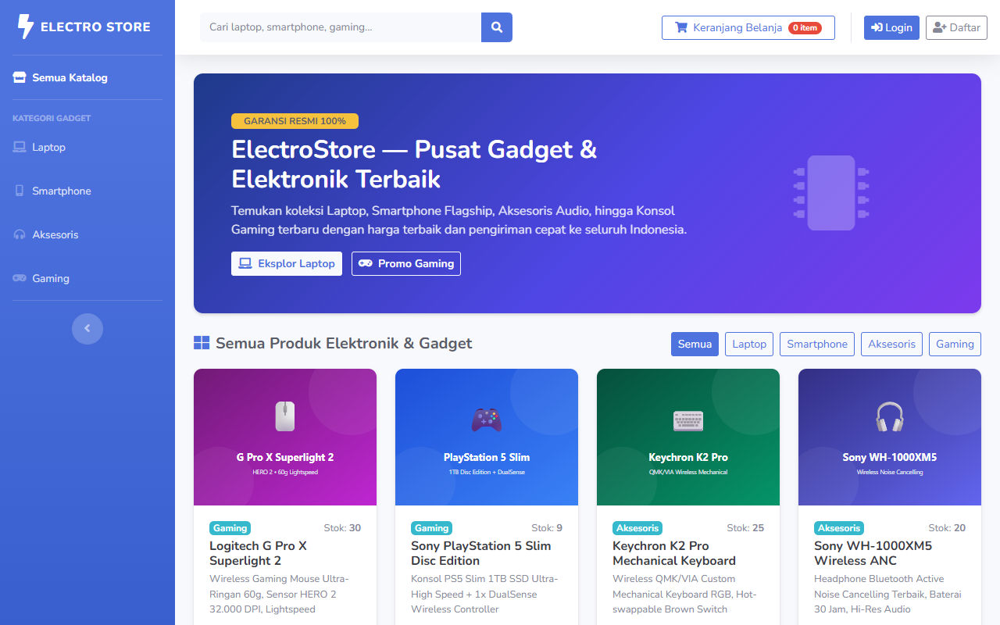
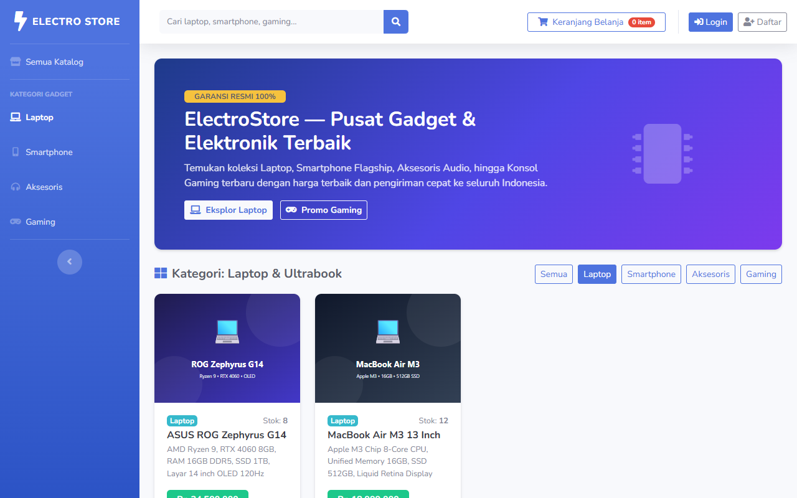
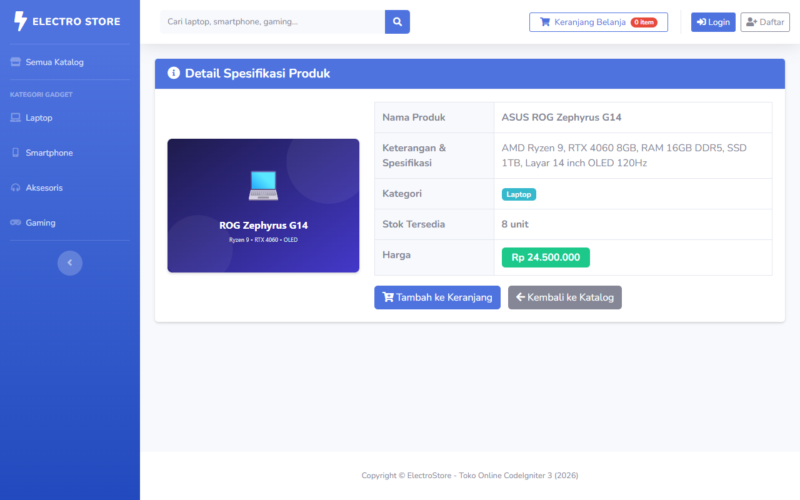
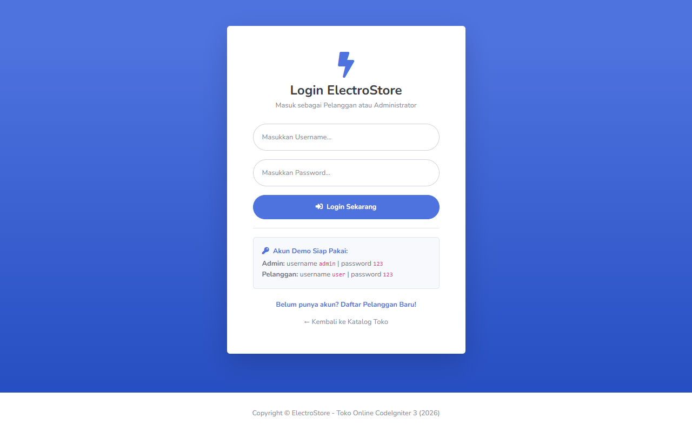
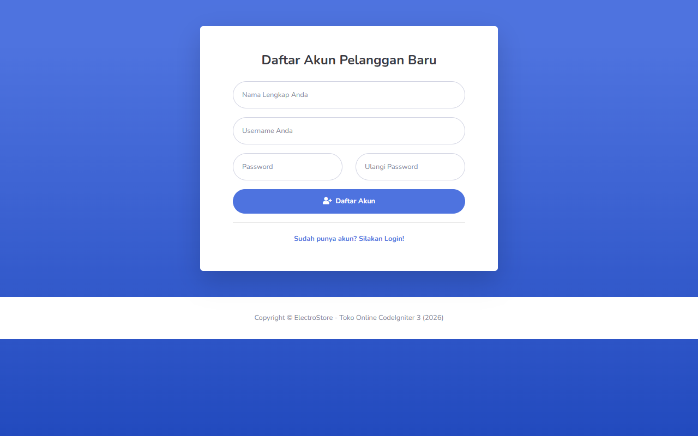
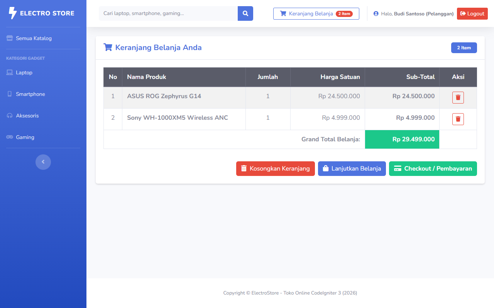
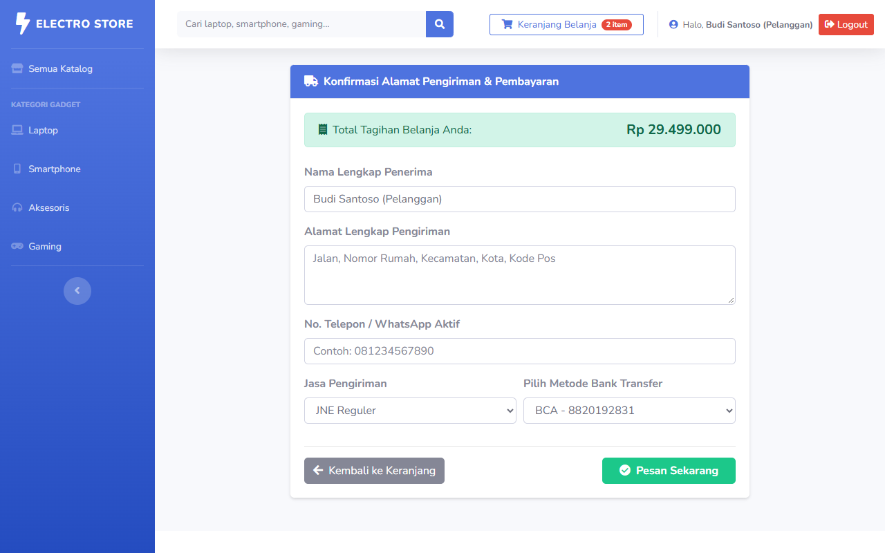
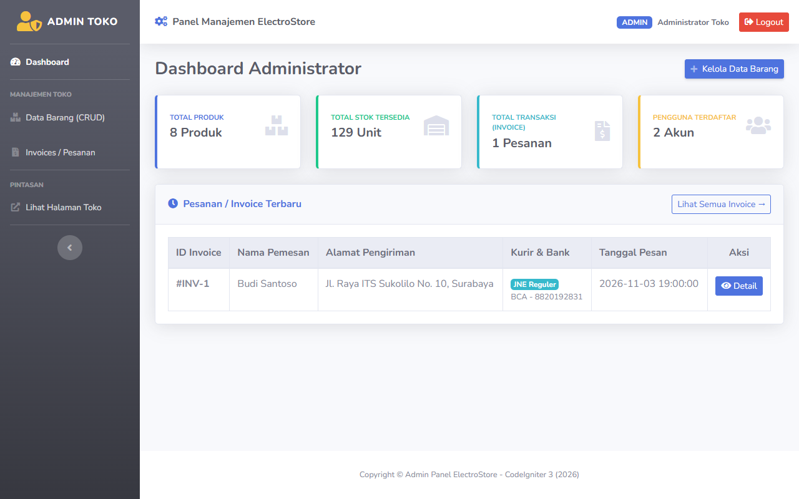
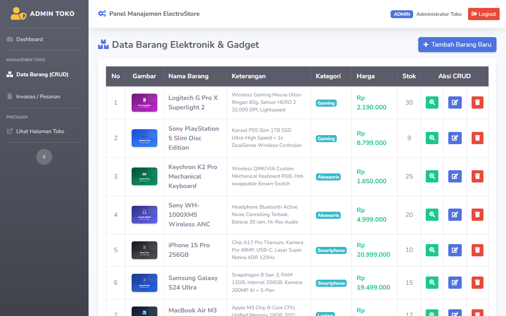
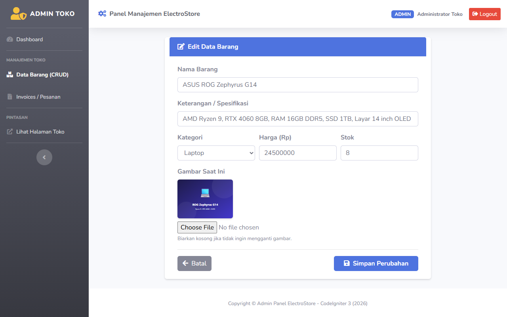
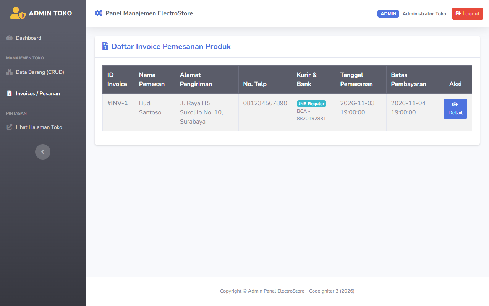
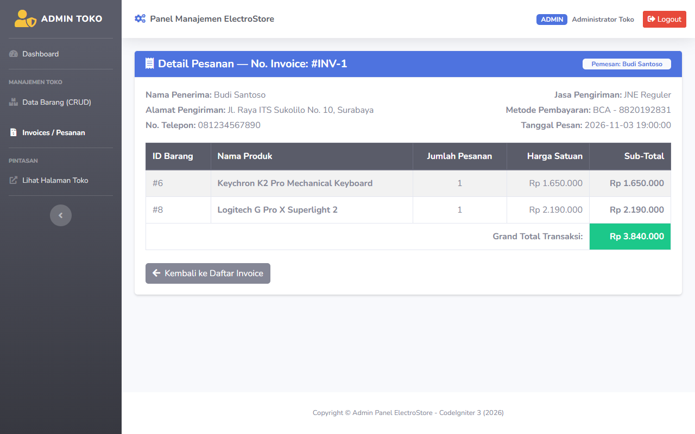
Untuk menjalankan proyek ini pada server lokal (seperti XAMPP / Laragon):
phpMyAdmin, buat database baru dengan nama db_toko_online.db_toko_online.sql yang terletak di folder proyek ke database tersebut.http://localhost/PBKK-web/Tugas%207/CodeIgniter-3/CodeIgniter-3.1.13/.admin | Password: 123user | Password: 123